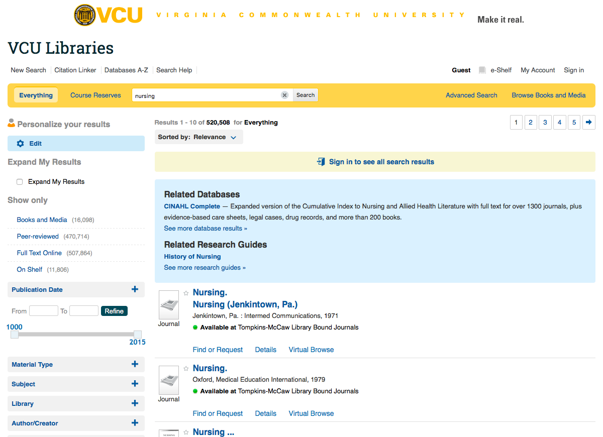
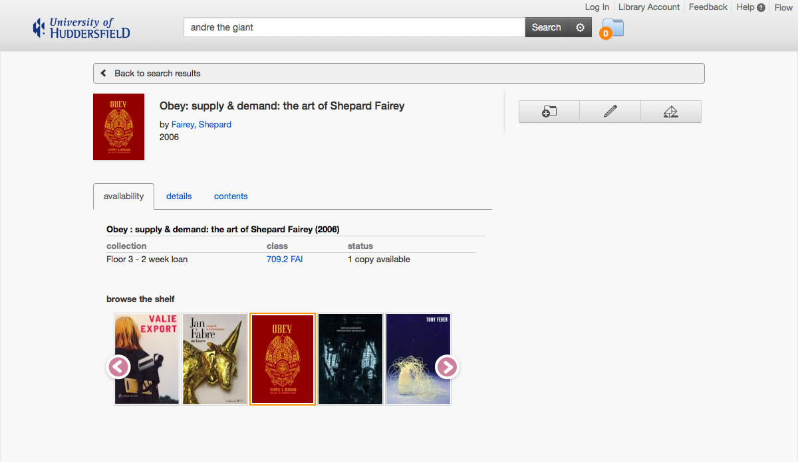

The following links will help you see the full code for VCU's database recommender, as well as the JSON object returned from their PHP script and sample searches in the live tool.
Dave Pattern decided to put all the functions of the OPAC into Huddersfield's discovery layer, Summon.
